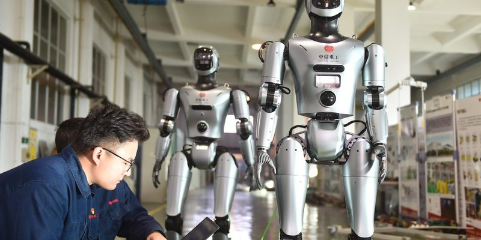
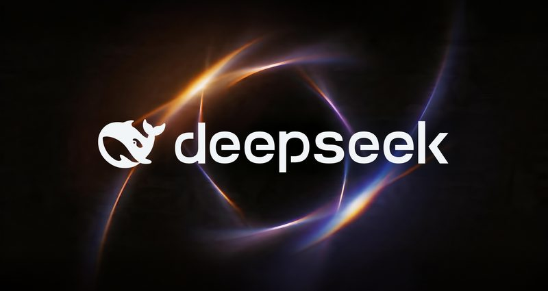
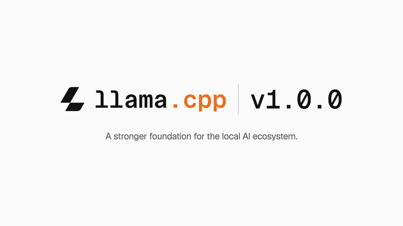
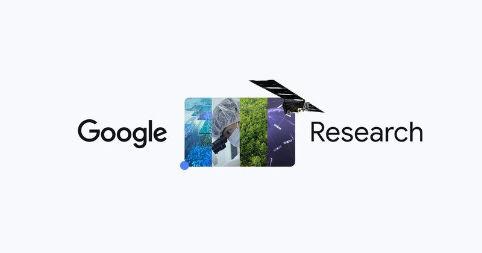
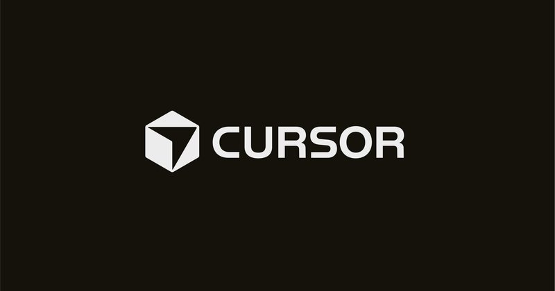
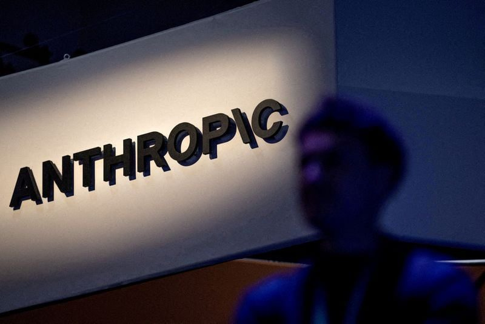

今日頭條
OpenAI 解散獨立機器人團隊
PLUS：DeepSeek 把 App 功能開放成 API
本期重點：OpenAI 把獨立的機器人團隊拆進研究與產品部門，押注通用模型直接控制機器人；DeepSeek 把 App 裡的搜尋、讀檔、語音等功能開放給開發者。另有本機跑 AI 的 llama.cpp 推出 1.0 正式版、Google 公開多代理系統 /teamwork 的研究成果、Cursor 公布惡意擴充套件事件調查結果、Anthropic 上市認購約 6 倍，以及 Amazon 傳出要建立全網商品資料庫。

圖：VCG／Getty Images，經 Fortune新聞#1OpenAI 解散獨立機器人團隊，改由通用模型帶頭
Fortune 11 月 13 日獨家報導，OpenAI 證實已把獨立的機器人團隊拆散：機器人研究併入首席研究長 Mark Chen 的主研究團隊，應用機器人與硬體團隊併入總裁 Greg Brockman 帶領的 Applied 部門。報導指出，研究人員把通用模型 GPT-6 Astra 接上機器人，表現出乎意料，所以不再需要另外做專用的機器人模型。
💡 跟你有什麼關係：這代表大公司開始認為「會聊天、寫程式的同一個 AI，也能直接操控機器人」，家用或工廠機器人未來可能跟著通用 AI 一起進步，而不是各自從頭開發。
⚠️ OpenAI 表示這是加速而不是放棄機器人，部分員工也公開說「解散」的標題有誤導；Sam Altman 的目標是 2027 年首次公開展示自家人形機器人。
📰 原始來源：Fortune（2026-11-13） ↗
圖：DeepSeek 官方工具#2DeepSeek 把 App 裡的搜尋、讀檔、語音功能開放成 API
DeepSeek 11 月 13 日晚間宣布，App 裡的網路搜尋、深度思考搜尋、上傳檔案、讀取網址與內容安全檢查，開發者只要在原本的 API 打開參數就能用，由 deepseek-flash 模型支援。另外也推出可單獨呼叫的 Search、Fetch、OCR（文字辨識）、ASR（語音轉文字）與 TTS（文字轉語音）介面，並開源一個可匯入 DeepSeek 對話紀錄的聊天範例程式。
💡 跟你有什麼關係：開發者不用再自己串搜尋、讀 PDF、語音等工具，就能做出接近 DeepSeek App 的服務，之後市面上用 DeepSeek 做底層的聊天、客服或語音 App 可能變多、價格也更有競爭。
⚠️ 工具呼叫要另外計費；官方提醒對外提供服務者應開啟安全檢查並履行內容審查、模型備案與 AI 標示等義務（依中國規定）。
📰 原始來源：DeepSeek API 官方更新紀錄（2026-11-13） ↗
圖：Hugging Face／ggml-org 官方新上線#3本機跑 AI 的 llama.cpp 推出 1.0 正式版
在自己電腦上執行 AI 模型最常用的開源程式庫 llama.cpp，11 月 13 日與底層的 ggml 一起發布 v1.0.0。團隊表示專案已發展 3.5 年、支援超過 150 種模型架構變體，之後只要介面有不相容的改動就會升主版本號，讓下游 App 更穩定。
💡 跟你有什麼關係：很多「不用上傳雲端、資料留在自己電腦」的 AI 桌面工具底層都用 llama.cpp，正式版代表這類工具更新時比較不容易壞掉，重視隱私的人選擇會更多。
⚠️ 這次主要是版本與介面穩定承諾，不是新模型；一般使用者通常透過其他 App 間接使用。
📰 原始來源：Hugging Face 官方部落格（2026-11-13） ↗
圖：Google Research 官方研究#4Google 公開多代理系統 /teamwork 成果，開放研究者免費申請
Google Research 11 月 13 日發文，介紹用 Gemini 4 模型搭配 Antigravity 的多代理工作流程 /teamwork，與學界合作解出多個數學與資訊理論的公開難題，並把 Google 的 AV1 影片解碼器從 C++ 改寫成約 17 萬行 Rust，速度比原版快 20% 到 30%。Google 同時開放 1 萬名學術研究者申請半年免費使用最高用量方案。
💡 跟你有什麼關係：這類「一群 AI 分工合作、再由另一個 AI 檢查」的做法，正從展示走向實際工作，未來研究、寫程式甚至審稿，都可能先交給 AI 團隊跑一輪再由人確認。
⚠️ 成果多為 Google 自述並與人類專家合作完成；部分形式化證明的完整內容尚未公開，外界仍在檢驗。
📰 原始來源：Google Research 官方部落格（2026-11-13） ↗
圖：Cursor 官方新聞#5Cursor 公布惡意擴充套件事件調查：最多 5,000 人可能裝到
AI 程式編輯器 Cursor 11 月 13 日公布調查結果：攻擊者先從合作廠商 Fireworks 外洩的金鑰拿到 Cursor 的部分資料，再用其中的憑證，在 10 月 29 日把假冒的 Claude Code 擴充套件放上 Cursor 的擴充套件快取，約 11 小時後下架，最多 5,000 名使用者可能下載到。Cursor 表示最後一次攻擊活動在 11 月 1 日且已被擋下，認為事件已控制。
💡 跟你有什麼關係：AI 編輯器的擴充套件權限很大，一個假套件就可能在電腦裝後門；有用 Cursor 的人應確認是否收到官方通知，裝過 2.1.312 或 2.1.313 版的要照公告步驟處理，只移除套件可能不夠。
⚠️ 事件最早在 10 月 29 日公開，本則為 11 月 13 日調查結果的新進展；Cursor 表示開啟隱私模式的提示與程式碼未受影響。
📰 原始來源：Cursor 官方部落格（2026-11-13） ↗
圖：Reuters，經 Investing.com資金#6Anthropic 上市認購約 6 倍，投資人仍質疑領先能維持多久
Reuters 11 月 13 日獨家報導，Anthropic 首次公開發行的法人認購，到 11 月 12 日（美國週四）收盤時已達可售股數約 6 倍，路演第一天約 2 倍。這檔約 640 億美元的發行預計在 11 月 18 日（美國週三）定價；投資人關心的是 Google 等對手追趕下，Claude 的領先能否延續到寫程式以外的市場。
💡 跟你有什麼關係：這可能是史上最大規模的 AI 公司上市之一，定價與上市後表現會影響整個 AI 產業的資金與估值氣氛，也牽動相關科技股。
⚠️ 認購數字來自匿名消息人士，Reuters 表示細節可能變動，Anthropic 不予置評；Anthropic 上市計畫 11 月 11 日已報導過，本則為認購情況的新進展。
📰 原始來源：Reuters，經 Investing.com（2026-11-13） ↗圖：The Verge觀點#7Amazon 傳出要建全網商品資料庫，搶 AI 購物代理流量
The Verge 11 月 13 日引述 Reuters 報導，Amazon 內部有一項名為「World Product Graph」的計畫，要收集網路上所有商品的資料，連 Amazon 沒賣的也包括在內，讓使用者和 AI 購物代理查商品時都留在 Amazon。內部文件還寫到，旗下購物 AI 助理「很多回答是錯的或不完整」，補足資料是為了讓它更準、更省成本。
💡 跟你有什麼關係：以後用 AI 幫忙找東西、比價時，背後是誰的商品資料庫，會影響 AI 推薦你去哪裡買；比價時多看幾個來源比較保險。
⚠️ Amazon 回應這是過時的腦力激盪文件，不一定代表目前計畫；文件寫的上線日期是 2027 年 10 月 1 日，是否實施仍未確定。本則為二手報導，Reuters 原文未取得。
📰 原始來源：The Verge（2026-11-13，引述 Reuters） ↗✅ 2026/11/15（日） 可以做：如果有在用 AI 寫程式的編輯器，打開擴充套件清單看一下來源與版本，不認識的就移除。
🗂️ 過去 14 天